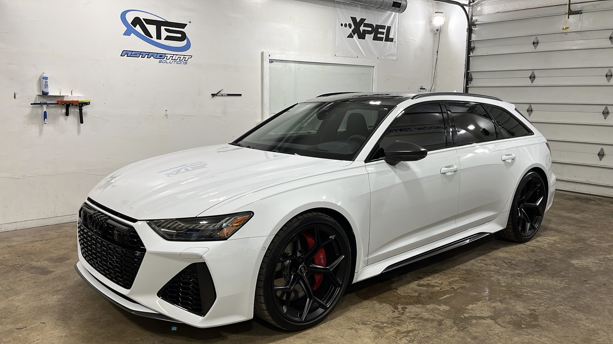
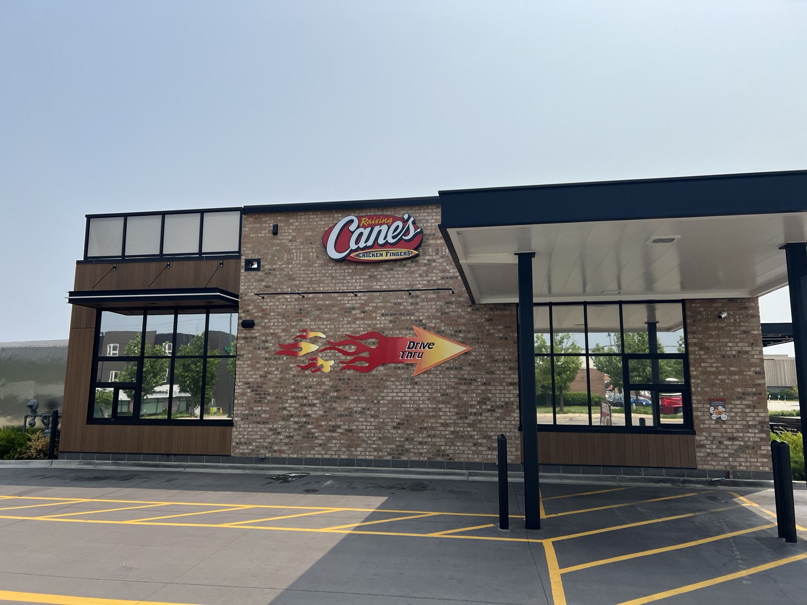
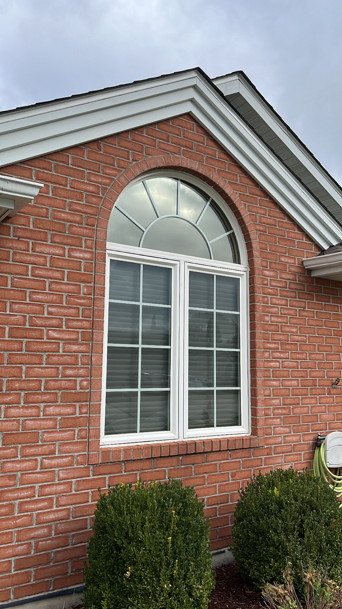
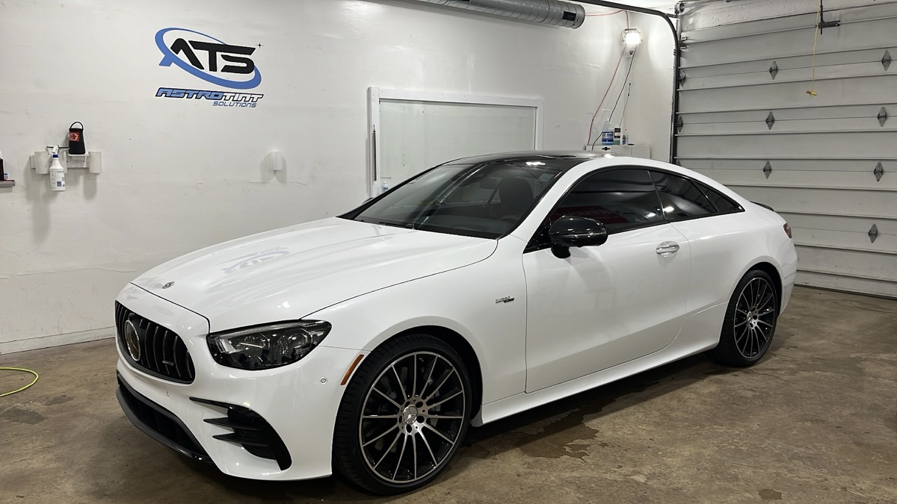

Beat the heat & glare
Ceramic film rejects a big share of the sun's infrared heat and over 99% of UV — so your car and your rooms stay cooler, your A/C works less, and your dash and furniture don't fade.
Plainfield, IL · Auto · Home · Commercial
Astro Tint Solutions installs premium ceramic window film, paint protection and ceramic coatings for cars, homes and businesses — blocking heat, glare and UV while giving everything a sharper, cleaner look. Backed by a lifetime warranty.
Free, no-pressure quote · Lifetime warranty · Mobile & in-shop service
Authorized dealer & installer
01 / See the difference
Before & after
Same glass, same light — one side untinted, one side with ceramic film. Grab the handle and slide.
02 / Visualizer
Tint darkness simulator
Tap a VLT (visible light transmittance) to see how it reads — lower % is darker. We'll dial in the exact legal shade for your vehicle at drop-off.
VLT 35%
Illustrative only — real appearance varies by glass, film and light. Illinois limits front side windows to 35% VLT; ask us what's legal for your vehicle.
Get a quote for this shadeWhy Astro Tint
Premium film does three jobs at once: it keeps the heat out, keeps your privacy in, and makes whatever it touches look sharper. Here's what you'll actually notice.
Ceramic film rejects a big share of the sun's infrared heat and over 99% of UV — so your car and your rooms stay cooler, your A/C works less, and your dash and furniture don't fade.
Tint keeps wandering eyes off your belongings, and paint protection film shields your hood and bumper from rock chips and scratches — guarding your ride and your home, inside and out.
Clean, color-stable film with no purple fade and no bubbling — installed by hand with tight, precise edges. The result looks factory-finished and stays that way, backed by a lifetime warranty.
What we do
From a daily driver to a storefront, Astro Tint handles the whole job with premium film and a meticulous, hand-finished install.
 Most requested
Most requested
Heat-blocking ceramic tint for cars, trucks & SUVs.

Invisible armor and a deep, easy-clean shine.

Cooler, more private, more comfortable rooms.

Better-looking, lower-cost storefronts & offices.
Not sure what you need? Tell us your vehicle or space and we'll recommend the right film — free.
On the bench lately



Which film is right for you?
Every job is different. Here's the plain-English difference so you know exactly what you're paying for — and we'll always point you to what actually fits.
Service area
Based in Plainfield, we bring premium tint, PPF and ceramic coatings to drivers, homeowners and businesses across the Chicago metro — mobile & in-shop.
Proudly covering Will, DuPage & Cook County and the surrounding suburbs.
Illinois tint law
Illinois sets how dark each window can go, measured in VLT (visible light transmittance). We install to spec so you stay legal — here's the quick reference.
| Window | Sedan | SUV / Van |
|---|---|---|
| Windshield | Top 6 in. | Top 6 in. |
| Front side | 35%+ | 35%+ |
| Back side | 35%+ | Any |
| Rear window | 35%+ | Any |
Reference only — Illinois law can change and medical exemptions may apply. We'll confirm the current legal shade for your exact vehicle at your appointment.
Recent work
Real photos from recent Astro Tint installs across Chicagoland — cars, homes and businesses. Tap any photo to take a closer look.
No photos in this category yet — ask us about your project.

About
Astro Tint Solutions is a locally owned shop serving Plainfield and the surrounding suburbs. We do one thing and do it right: premium window film, paint protection and ceramic coatings, installed by hand with the kind of patience and precision the big-box shops skip.
Every job starts with a straight answer on the film that actually fits your goals and budget — and every install is backed by a lifetime warranty. No upsells, no shortcuts, no bubbles. Just clean, lasting work you'll be glad you didn't cheap out on.
Get your free quoteReviews
Real reviews from recent Astro Tint customers.
"The team was professional from start to finish and the tint quality is outstanding. Couldn't be happier with how my car turned out."
Jonathan MarkusAutomotive tint"Had my home windows done and the difference is night and day — the rooms stay so much cooler now. Highly recommend these guys."
Steve JacksonResidential tint"The paint protection film exceeded my expectations. Clean install, you can't even tell it's there, and my front end is fully protected."
Angelina RosePaint protection filmHow it works
Tell us your vehicle or space and what you want — heat, privacy, looks or protection. We recommend the right film and give you an honest price.
Pick a time that works, including evenings and weekends when available. Mobile and in-shop options for most jobs.
Your film is computer-cut and hand-finished for tight, clean edges. Most car tints are done in 2–4 hours.
We walk you through care, then back the work with a lifetime warranty. Any issue with the film, ever — we make it right.
Why it's worth it
Tint is one of those things you buy once — or twice, if you go cheap. Here's the honest difference.
| Budget tint shop | Astro Tint | |
|---|---|---|
| Film grade | Cheap dyed film | Premium ceramic & carbon |
| Heat & UV rejection | Minimal | High infrared + 99%+ UV |
| Warranty | Little or none | Lifetime |
| Install quality | Rushed — bubbles & peeling | Hand-cut, bubble-free |
| Color stability | Fades & turns purple | Stays true for years |
| Turnaround | Unpredictable | Same / next-day options |
| Real cost | Cheap now, redo later | Honest price, done once |
Pricing
Final price depends on your vehicle, space and film — and your quote is always free. Here's where things start.
$179 starting
Cars, trucks & SUVs
$349 starting
Whole-vehicle ceramic tint
Custom quote
Protection, homes & commercial
Our lifetime guarantee: no bubbling, peeling, cracking or purple fade — ever. If the film fails, we re-do it free. Clean install, honest price, work that lasts.
FAQ
It depends on the vehicle or property and the film you choose. Most car tint jobs start around $179, and full-vehicle ceramic packages start around $349. Home and commercial jobs are quoted by the square footage. Every quote is free and no-pressure.
Yes — we install to Illinois tint law. In Illinois, front side windows must allow more than 35% of light through, and the windshield can have a non-reflective strip along the top. We’ll explain the legal limits and recommend the darkest legal shade for your goals.
Most full-car tints take 2 to 4 hours. Paint protection film and ceramic coatings take longer and are usually a same-day or next-day turnaround. We’ll give you an exact timeline when you book.
Yes. Our ceramic films reject a large share of the sun’s infrared heat and over 99% of UV rays, so your car or room stays noticeably cooler and your interior is protected from fading — without a dark, mirrored look.
Yes — our premium films carry a lifetime warranty against bubbling, peeling, cracking and color change. If anything ever goes wrong with the film, we make it right.
Both. We offer mobile service across Chicagoland for many jobs and in-shop appointments in Plainfield. Tell us what's easiest and we'll make it work.
Usually within a few days. Send a free quote request or call 630-362-0909 and we’ll get you on the schedule fast — including evening and weekend slots when available.
Free quote
Tell us a little about your vehicle, home or business and we'll get back to you fast with a no-pressure price. No spam, no hard sell — just a straight answer.
Ready when you are
Call now to talk it through, or request your free quote and we’ll take it from there.
Prefer to talk to a real person? Call or text the shop — we’ll answer your questions and get you scheduled.
Call (630) 362-0909